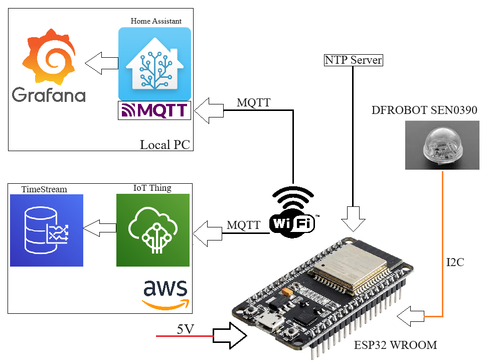

1. Koncept projektu
Projekt slúži na meranie intenzity denného svetla (v luxoch) na streche budovy. Dve samostatné meracie jednotky zbierajú dáta a odosielajú ich súčasne do dvoch destinácií — lokálneho Home Assistant servera aj do cloudu (AWS IoT).

2. Hardware
Komponenty
| Komponent | Detail |
|---|---|
| MCU | ESP32 WROOM |
| Senzor | DFRobot B_LUX_V30B (SEN0390) — merač intenzity svetla |
| Komunikácia senzora | I2C cez flat ribbon kábel, pin 13 (chip select) |
| Napájanie | 5V cez USB / priemyselný konektor |
| Krabička | Plastová inštalačná krabička vystlaná hliníkovou fóliou (tienenie EMI) |
Zostava jednotky
ESP32 je osadený na prototypovej PCB. Senzor B_LUX_V30B je vyvedený von z krabičky cez flat kábel a zakrytý priehľadnou kupolou, ktorá ho chráni pred mechanickým poškodením, no prepúšťa svetlo.

Montáž do krabičky
Elektronika je uložená v krabičke vystlanej hliníkovou fóliou. Napájací a komunikačný konektor je vyvedený zdola cez priemyselný skrutkový konektor.

Finálna jednotka
Zatvorená krabička — senzorová kupola na prednej strane, priemyselný konektor naspodu.

Inštalácia
Dve jednotky sú nainštalované pri strešnom okne, senzory smerujú nahor smerom k sklenenému panelu. Červené LED na ESP32 indikujú, že zariadenia bežia.


3. Systémová architektúra
Každá jednotka komunikuje bezdrôtovo cez WiFi s troma externými službami:
4. Popis kódu — Funkčné bloky
4.1 Inicializácia — setup()
Po zapnutí ESP32 prebehne jednorazová inicializácia:
- Spustenie sériového portu (
115200 baud) - Pripojenie na WiFi sieť — čaká v slučke až do úspešného spojenia
- Inicializácia svetelného senzora
myLux.begin() - Načítanie AWS TLS certifikátov (CA, device cert, private key) uložených v
PROGMEM - Nastavenie MQTT serverov — AWS (
port 8883) aj lokálny HA (port 1883) - Štart NTP klienta pre synchronizáciu času
4.2 Získanie dát — sensorData()
- Vyžiada aktuálny čas z NTP servera (
forceUpdate()) - Prečíta intenzitu svetla zo senzora → hodnota v luxoch (
double→ prevedená naint) - Zostaví JSON správu a uloží do zdieľaného buffra
jsonBuffer[512]
{
"light": 8137,
"date": "2024-06-12 12:57:24",
"id": "roof1"
}4.3 Odosielanie na lokálny MQTT — sendToLocalMQTT()
- Overí, či je aktívne spojenie s lokálnym HA brokerom
- Ak nie → pripojí sa pomocou
HA_MQTT_USER/HA_MQTT_PASSWORD - Publikuje JSON na tému
home/roof/roofLight_1
Takto vyzerá prijatá správa v Home Assistant MQTT brokerovi:


4.4 Odosielanie do AWS — sendToAWS()
- Nadväzuje šifrované TLS spojenie s AWS IoT endpoint (port
8883) - Autentifikácia cez RSA certifikáty (uložené v
secrets.h) - Subscribe → Publish JSON → Unsubscribe → Disconnect
- Spojenie sa po každom odoslaní zatvára
4.5 Správa WiFi — reconnectWiFi()
- Ak WiFi vypadne, zavolá
disconnect()→reconnect() - Čaká v 5-sekundovej slučke až do obnovenia spojenia
4.6 Hlavná slučka — loop()
Meranie prebieha každých 10 sekúnd (LOOP_PERIOD = 10000 ms).
5. Úložisko dát — AWS TimeStream
Dáta prijaté cez AWS IoT sú ukladané do databázy Amazon Timestream (tabuľka Sensors.roofSensor).
Každý záznam obsahuje:
SensorID→roof1measure_name→light(int) alebodate(varchar)time→ AWS timestamp prijatia správymeasure_value→ nameraná hodnota

6. Vizualizácia — Grafana
Dáta z oboch senzorov sú zobrazené v Grafana dashboarde „Roof Light Sensors".
Graf zobrazuje priemernú intenzitu svetla (lx.mean) v čase s obnovou každých 5 sekúnd.
Z grafu je viditeľný typický denný priebeh — maximum okolo poludnia (~14 000–15 000 lux), pokles ráno a popoludní.

7. Konfigurácia — secrets.h
secrets.h nie je súčasťou repozitára — obsahuje citlivé prihlasovacie údaje a certifikáty. Pre vlastné nasadenie vytvor tento súbor podľa šablóny nižšie.
| Parameter | Popis |
|---|---|
THINGNAME | Názov AWS IoT zariadenia |
AWS_IOT_ENDPOINT | AWS IoT endpoint URL |
AWS_IOT_PUBLISH_TOPIC | MQTT téma pre odosielanie |
AWS_IOT_SUBSCRIBE_TOPIC | MQTT téma pre príjem |
WIFI_SSID | Meno WiFi siete |
WIFI_PASSWORD | Heslo WiFi siete |
TIMEOFFSET | Časová zóna v sekundách (GMT+1 = 3600) |
HA_MQTT_SERVER | IP adresa lokálneho HA MQTT brokera |
HA_MQTT_PORT | Port MQTT brokera (default 1883) |
HA_MQTT_USER | MQTT používateľské meno |
HA_MQTT_PASSWORD | MQTT heslo |
HA_MQTT_TOPIC | MQTT téma pre Home Assistant |
PUBLISH_MESSAGE_ID | Identifikátor správy (napr. roof1) |
LOOP_PERIOD | Interval merania v ms (10000 = 10 sek.) |
AWS_CERT_CA | Amazon Root CA certifikát |
AWS_CERT_CRT | Device certifikát |
AWS_CERT_PRIVATE | Device privátny kľúč RSA |
8. Použité knižnice
| Knižnica | Účel |
|---|---|
WiFiClientSecure | Šifrované WiFi spojenie (TLS) pre AWS |
PubSubClient | MQTT klient |
ArduinoJson | Serializácia dát do JSON |
NTPClient + WiFiUdp | Synchronizácia času cez NTP |
| DFRobot_B_LUX_V30B | Ovládač svetelného senzora |
9. Dve zariadenia v nasadení
| Jednotka 1 | Jednotka 2 | |
|---|---|---|
| THINGNAME | roofLight_1 | roofLight_2 |
| Message ID | roof1 | roof2 |
| AWS téma | house/roof/roofLight_1 | house/roof/roofLight_2 |
| HA téma | home/roof/roofLight_1 | home/roof/roofLight_2 |
| Interval | 10 sekúnd | 10 sekúnd |
roofLight_1. Pre druhú jednotku stačí zmeniť príslušné hodnoty v secrets.h.